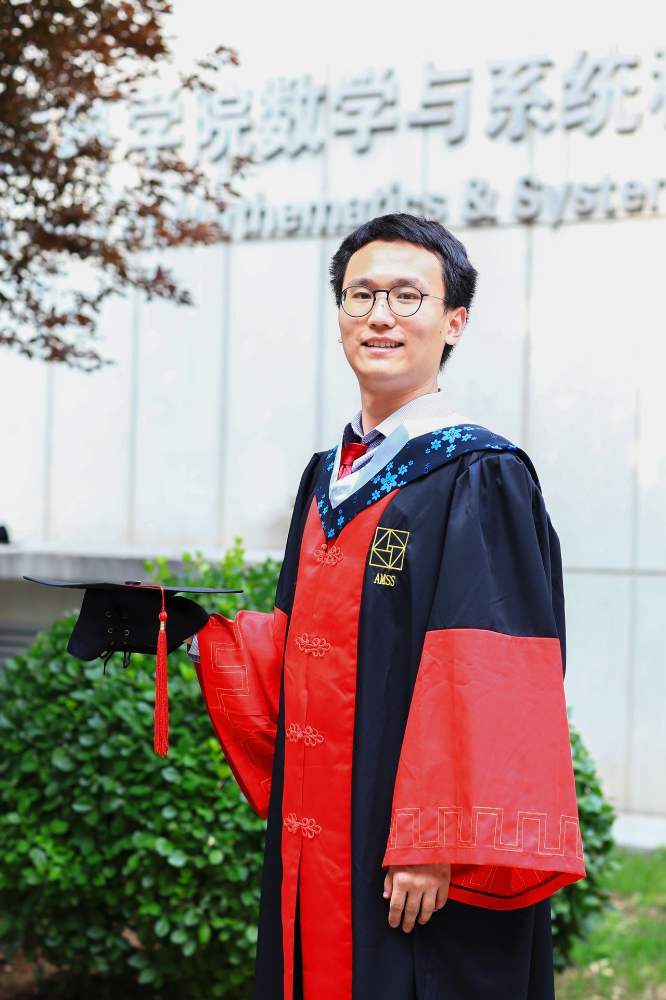

刘为
|

|
刘为，博士
研究助理教授，
香港理工大学应用数学系
邮箱: liuwei175 art lsec.cc.ac.cn
[谷歌主页]，[英文主页]
ORCID: 0000-0002-2376-8974
|
新闻
- 03.14：论文被《Transactions on Machine Learning Research》接受 — LoDAdaC: a unified local training‑based decentralized framework with Adam‑type updates and compressed communication。
- 01.26：论文被《SIAM Journal on Optimization》接受 — A SPIDER‑type stochastic subgradient method for expectation‑constrained nonconvex nonsmooth optimization。
- 01.06：论文发表于《Mathematical Programming Computation》 — Damped proximal augmented Lagrangian method for weakly‑convex problems with convex constraints。
- 07.09：会议论文被《Transactions on Machine Learning Research》接受 — Compressed decentralized momentum stochastic gradient methods for nonconvex optimization。
关于我
我于2017年在浙江大学数学系获得学士学位。2017年9月在中国科学院数学与系统科学研究院的计算数学与科学/工程计算研究所开始攻读硕士，导师为刘歆教授，并于2019年8月转为博士候选人。之后在香港理工大学访问两年，由陈小君教授资助。2022年6月获得博士学位。2022年至2025年在伦斯勒理工学院担任博士后研究员，由徐扬扬教授资助。现任香港理工大学应用数学系研究助理教授。
精选论文
- Wei Liu, Yangyang Xu，A SPIDER‑type stochastic subgradient method for expectation‑constrained nonconvex nonsmooth optimization。
- Wei Liu, Muhammad Khan, Gabriel Mancino‑Ball, Yangyang Xu，A stochastic smoothing framework for nonconvex‑nonconcave min‑sum‑max problems with applications to Wasserstein distributionally robust optimization。
- Hari Dahal, Wei Liu, Yangyang Xu，Damped proximal augmented Lagrangian method for weakly‑convex problems with convex constraints。
- Wei Liu, Qihang Lin, Yangyang Xu，First‑order methods for affinely constrained composite non‑convex non‑smooth problems: Lower complexity bound and near‑optimal methods。
- Wei Liu, Xin Liu, Xiaojun Chen，An inexact augmented Lagrangian algorithm for training leaky ReLU neural network with group sparsity。
- Wei Liu, Xin Liu, Xiaojun Chen，Linearly‑constrained nonsmooth optimization for training autoencoders。
研究兴趣
- 大规模非凸（非光滑）约束优化的一阶算法。
- 面向统计和机器学习的随机（子）梯度方法。
- 复杂度分析（迭代复杂度、Oracle复杂度与计算复杂度）。
- 应用：人工智能公平性、深度神经网络、分布式鲁棒优化、去中心化分布式学习、半监督学习、双层优化、极小极大问题以及大型语言模型。
教育背景
- 2017–2022：中国科学院数学与系统科学研究院计算数学与科学/工程计算研究所 — 计算数学博士（导师：刘歆）。
- 2013–2017：浙江大学，竺可桢学院求是数学班 — 数学学士。
工作经历
- 2019年8月 – 2021年8月：香港理工大学 — 研究助理，导师：陈小君教授。
- 2023年5月：布朗大学 — 研讨会访问学者。
- 2022年8月 – 2025年8月：伦斯勒理工学院 — 博士后研究员，导师：徐扬扬教授。
获奖情况
- 2026年：入选国家高层次人才计划。
- 2022年：中国科学院院长奖学金。
- 2017年：浙江大学优秀毕业生一等奖。
- 2014–2016年：基础学科拔尖学生奖学金一等奖（三次）。
技能
- 编程语言：Matlab、C、Python。
- 语言能力：中文（母语）、英文（专业工作水平）。
- 专业知识：非光滑分析、凸优化、机器学习、优化中的一阶方法。
期刊审稿
- Operations Research
- Mathematical Programming Computation
- Computational Optimization and Applications
- Journal of Machine Learning Research
- 科学中国：数学
- IEEE Transactions on Cybernetics
- Journal of Computational Mathematics
- Journal of Scientific Computing
|